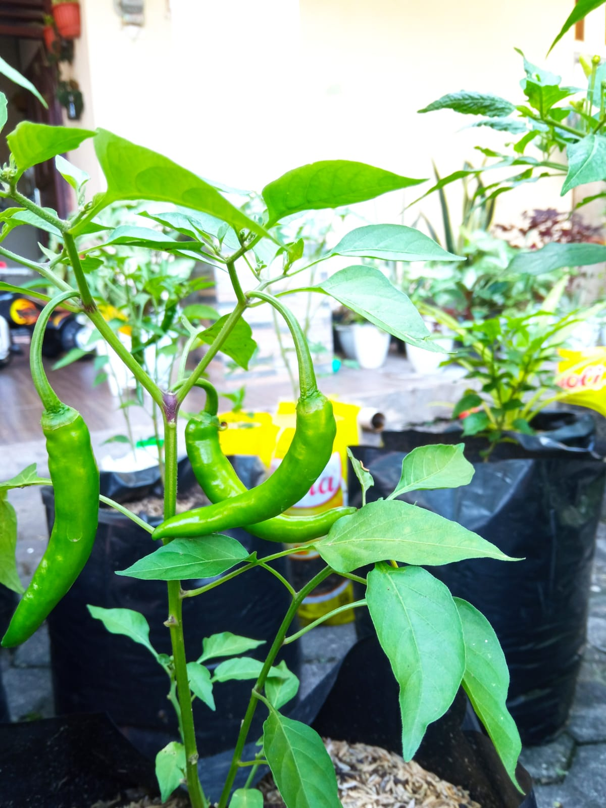

Sistem irigasi otomatis berbasis dual ESP32 menggunakan komunikasi peer-to-peer ESP-NOW untuk memonitor suhu, kelembaban udara, dan kelembaban tanah secara real-time tanpa internet maupun cloud server. Sistem bekerja sepenuhnya secara edge computing dengan latensi rendah, konsumsi daya rendah, dan respons cepat terhadap kondisi lingkungan tanaman cabai.
ESP32 Node
Update Data
Tanpa Internet

Sistem dirancang khusus untuk kebutuhan smart farming skala kecil hingga menengah dengan fokus pada efisiensi, kestabilan komunikasi, kemudahan implementasi, dan biaya rendah.
ESP-NOW memungkinkan komunikasi langsung antar ESP32 tanpa router maupun cloud server sehingga cocok digunakan pada lahan terpencil.
Seluruh komponen mudah ditemukan dengan biaya murah namun tetap mampu menghasilkan sistem monitoring dan irigasi otomatis yang stabil.
Pengiriman data tiap 500ms memberikan respons cepat terhadap perubahan kondisi lingkungan tanaman cabai.
Pompa otomatis dimatikan jika aktif lebih dari 5 menit 10 detik untuk mencegah kerusakan hardware maupun banjir lahan.
Mode AUTO dan MANUAL memungkinkan operator mengambil alih kontrol kapan saja tanpa mematikan sistem.
Seluruh proses analisis threshold dilakukan langsung pada ESP32 controller tanpa server eksternal.
| Kondisi | Parameter | Nilai | Aksi | Alasan |
|---|---|---|---|---|
| Kelembaban udara ekstrem | RH | >90% | FORCE OFF | Mencegah risiko jamur dan busuk akar. |
| Tanah terlalu kering | Soil Moisture | <55% | POMPA ON | Cabai sensitif terhadap kekeringan. |
| Suhu tinggi | Suhu + Soil | >32°C & <75% | POMPA ON | Evapotranspirasi meningkat. |
| Tanah cukup basah | Soil Moisture | >=75% | POMPA OFF | Mencegah overwatering. |
| Safety Timer | Durasi Pompa | >5 menit | AUTO OFF | Proteksi hardware. |
ESP32 menginisialisasi WiFi STA mode dan peer ESP-NOW.
DHT22 dan sensor soil membaca kondisi lingkungan secara non-blocking.
Data sensor dikirim ke controller melalui ESP-NOW.
ESP32 controller menentukan keputusan penyiraman otomatis.
Perintah ON/OFF pompa dikirim kembali ke node sensor.
Relay mengaktifkan atau mematikan pompa secara real-time.
ESP32 dapat dikembangkan menjadi access point dengan dashboard monitoring real-time berbasis web.
Sistem dapat diintegrasikan dengan solar panel dan baterai Li-Ion untuk operasi mandiri.
Menyimpan data historis sensor untuk analisis pertumbuhan tanaman.
Threshold dapat dibuat adaptif menggunakan machine learning berdasarkan histori lingkungan.